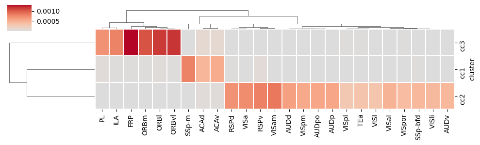
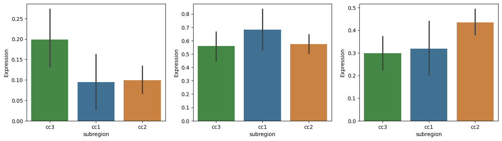

[1]:
import pandas as pd
import scanpy as sc
from scipy.spatial import cKDTree
from tqdm import tqdm
import matplotlib.pyplot as plt
import warnings
import seaborn as sns
import matplotlib as mpl
mpl.rcParams['pdf.fonttype'] = 42
mpl.rcParams['ps.fonttype'] = 42
warnings.filterwarnings('ignore')
/mnt/Data16Tc/home/haichao/anaconda3/envs/SpaCon_test/lib/python3.8/site-packages/tqdm/auto.py:21: TqdmWarning: IProgress not found. Please update jupyter and ipywidgets. See https://ipywidgets.readthedocs.io/en/stable/user_install.html
from .autonotebook import tqdm as notebook_tqdm
gene exp data
[3]:
adata_in = sc.read_h5ad('/mnt/Data16Tc/home/haichao/code/SpaCon/Data/N_20231213_zxw/mouse_3/adata_processed.h5ad')
allen_region = pd.read_csv('/mnt/Data16Tc/home/haichao/code/SpaCon/Data/N_20231213_zxw/mouse_3/allen_region.csv')
adata_in.obs['region'] = allen_region['region'].values
meta = pd.read_csv('/mnt/Data16Tc/home/haichao/code/SpaCon/Data/N_20231213_zxw/mouse_3/cell_metadata_with_cluster_annotation.csv')
meta = meta.set_index('cell_label')
meta = meta.loc[adata_in.obs.index.to_list()]
adata_in.obs['cell_type'] = meta['class'].to_list()
adata_out = sc.read_h5ad('/mnt/Data18Td/Data/haichao/merfish_raw_data_zxw3/out_cell_adata/adata_out_cell_distance_q0.3/after_qc/Zhuang-ABCA-3.001.h5ad')
adata_out.obs['region'] = adata_in.obs.loc[adata_out.obs_names]['region'].values
adata_in = adata_in[adata_in.obs['cell_type'].str.contains('Glut')]
adata_out.obs
[3]:
| totalRNA | brain_section_label | x | y | z | n_genes_by_counts | total_counts | region | |
|---|---|---|---|---|---|---|---|---|
| 100008170567769574864159172860058606533 | 175 | Zhuang-ABCA-3.001 | 19.063883 | 33.423346 | 54.106801 | 100 | 175 | MOB |
| 100019036144713180485707288452329906643 | 373 | Zhuang-ABCA-3.001 | 44.290637 | 63.872748 | 53.902462 | 189 | 373 | NDB |
| 10002377904544842423531242460024745973 | 277 | Zhuang-ABCA-3.001 | 63.860525 | 7.998013 | 54.043841 | 126 | 277 | RSPd2/3 |
| 100027648052649525810014127621472143070 | 435 | Zhuang-ABCA-3.001 | 113.480480 | 41.056674 | 54.349928 | 165 | 435 | arb |
| 100029875144524072265954931895494067096 | 60 | Zhuang-ABCA-3.001 | 11.572676 | 37.921554 | 54.370336 | 39 | 60 | MOB |
| ... | ... | ... | ... | ... | ... | ... | ... | ... |
| 99961718914838042706216314325649765172 | 627 | Zhuang-ABCA-3.001 | 113.199100 | 23.661374 | 54.096322 | 157 | 627 | CENT3 |
| 9996242280180655885872867452807576494 | 157 | Zhuang-ABCA-3.001 | 86.896566 | 18.326938 | 54.027272 | 100 | 157 | SCop |
| 999921392501518309214993564089572563 | 97 | Zhuang-ABCA-3.001 | 21.082878 | 31.635078 | 54.090905 | 67 | 97 | ORBm1 |
| 99995909784199304193294645747252265238 | 154 | Zhuang-ABCA-3.001 | 111.605478 | 22.417974 | 54.070819 | 93 | 154 | CENT3 |
| 99996568769251334694329666788053033728 | 200 | Zhuang-ABCA-3.001 | 112.945756 | 31.433985 | 54.093405 | 95 | 200 | CENT3 |
83602 rows × 8 columns
[4]:
gene_com = list(set(adata_in.var_names) & set(adata_out.var_names))
adata_in = adata_in[:, gene_com]
adata_out = adata_out[:, gene_com]
[5]:
ctx2cc_conn_cluster_mean = pd.read_csv('./ctx_cc_conn_filtered.csv', index_col=0)
sns.clustermap(ctx2cc_conn_cluster_mean, cmap='coolwarm', center=0, figsize=(10, 3), linewidths=0.05, linecolor='white')
[5]:
<seaborn.matrix.ClusterGrid at 0x7f887404b310>

[6]:
adata_ctx = adata_in[adata_in.obs['region'].str.startswith(tuple(ctx2cc_conn_cluster_mean.columns))]
adata_ctx
[6]:
View of AnnData object with n_obs × n_vars = 67823 × 1111
obs: 'brain_section_label', 'x', 'y', 'z', 'x_ccf', 'y_ccf', 'z_ccf', 'region', 'cell_type'
[12]:
ctx1 = ['FRP', 'ORBl', 'ORBvl', 'ORBm', 'PL', 'ILA']
ctx2 = ['SSp-m', 'ACAd', 'ACAv']
ctx3=['RSPv','RSPd', 'VISpm', 'VISa', 'VISam', 'SSp-bfd', 'VISpor', 'VISli', 'TEa', 'VISpl', 'VISl', 'AUDv', 'VISal', 'AUDpo', 'AUDp', 'AUDd']
adata_ctx.obs['cc_ctx'] = None
adata_ctx.obs.loc[adata_ctx.obs['region'].str.startswith(tuple(ctx1)), 'cc_ctx'] = 'ctx1'
adata_ctx.obs.loc[adata_ctx.obs['region'].str.startswith(tuple(ctx2)), 'cc_ctx'] = 'ctx2'
adata_ctx.obs.loc[adata_ctx.obs['region'].str.startswith(tuple(ctx3)), 'cc_ctx'] = 'ctx3'
adata_ctx = adata_ctx[adata_ctx.obs['cc_ctx'].notna()]
[ ]:
adata_cc = adata_out[adata_out.obs['region'].str.startswith('cc')]
tmp = adata_cc.copy()
idx = []
cc_cluster_by_conn = pd.read_csv('./cc_cluster_by_conn.csv', index_col=0)
coordinate = cc_cluster_by_conn[['x', 'y']].values
kdtree = cKDTree(coordinate)
for coord in tqdm(adata_cc.obs[['x', 'y']].values):
# 查询最近邻索引
_, nearest_index = kdtree.query(coord)
idx.append(nearest_index)
plt.figure(figsize=(9,5))
### match the cc cluster
adata_cc.obs['NT_index'] = idx
adata_cc.obs['cc'] = cc_cluster_by_conn.loc[adata_cc.obs['NT_index']]['c'].values
adata_cc = adata_cc[adata_cc.obs['cc'].notna()]
adata_cc.obs['cc'] = 'cc'+((adata_cc.obs['cc']).astype(int)+1).astype(str)
#### plot
categories = adata_cc.obs['cc'].unique()
# plt.scatter(adata_out.obs['x'], adata_out.obs['y'], s=1, c='#d3d3d3')
plt.scatter(tmp.obs['x'], tmp.obs['y'], s=20, c='#8f8f8f')
# plt.scatter(tmp.obs['x'], tmp.obs['y'], s=20, c='#d3d3d3')
# 为每个类别绘制散点
cm = ['#ff7f0e', '#2ca02c', '#2377b4']
# cm = ['#6597b9', '#6bad6b', '#e9a161']
i=0
for category in categories:
subset = adata_cc[adata_cc.obs['cc'] == category]
plt.scatter(subset.obs['x'], subset.obs['y'], label=category, s=20, c=cm[i])
# print(f'cc_{int(category)}')
i=i+1
plt.legend()
plt.gca().invert_yaxis()
# plt.savefig('cc_area.png', dpi=600)
# plt.savefig('./cc/cc1_cc2_cc3.pdf', format='pdf')
DEG
[14]:
sc.pp.normalize_total(adata_ctx, target_sum=1e4)
sc.pp.log1p(adata_ctx)
[15]:
sc.pp.normalize_total(adata_cc, target_sum=1e4)
sc.pp.log1p(adata_cc)
[16]:
sc.tl.rank_genes_groups(adata_ctx, groupby="cc_ctx", reference="rest", n_genes=adata_ctx.shape[1], method='wilcoxon')
[17]:
regions = adata_ctx.obs['cc_ctx'].unique()
top_genes_df = pd.DataFrame(columns=['region', 'gene', 'score', 'logfoldchanges', 'pvals', 'pvals_adj'])
# 遍历每个区域，提取排名前3的基因
for region in regions:
# 提取特定区域的marker基因
markers_df = sc.get.rank_genes_groups_df(adata_ctx, group=region)
markers_df = markers_df.sort_values(by='logfoldchanges', ascending=False)
# 获取排名前3的基因
top_genes = markers_df.head(5)
# if top_genes['names'].values == 'Ttr':
# top_genes = markers_df.head(2)
# 添加区域信息
top_genes['region'] = region
# 选择需要的列
top_genes = top_genes[['region', 'names', 'scores', 'logfoldchanges', 'pvals', 'pvals_adj']]
# 重命名列
top_genes.columns = ['region', 'gene', 'score', 'logfoldchanges', 'pvals', 'pvals_adj']
# 将结果添加到汇总的DataFrame中
top_genes_df = pd.concat([top_genes_df, top_genes], ignore_index=True)
top_genes_df = top_genes_df.set_index('region')
top_genes_df
[17]:
| gene | score | logfoldchanges | pvals | pvals_adj | |
|---|---|---|---|---|---|
| region | |||||
| ctx3 | Nr2f2 | 10.998008 | 2.251740 | 3.906658e-28 | 2.346106e-27 |
| ctx3 | Tshz2 | 42.789413 | 1.908488 | 0.000000e+00 | 0.000000e+00 |
| ctx3 | Met | 15.654150 | 1.551293 | 3.112418e-55 | 2.659920e-54 |
| ctx3 | Ctxn3 | 5.829773 | 1.497417 | 5.550263e-09 | 1.995580e-08 |
| ctx3 | C1ql2 | 4.970668 | 1.410147 | 6.672248e-07 | 2.193156e-06 |
| ctx2 | Scn4b | 33.871655 | 1.264914 | 1.742216e-251 | 6.452006e-249 |
| ctx2 | Bmpr1b | 13.590011 | 1.168321 | 4.590144e-42 | 8.792501e-41 |
| ctx2 | Adgrl2 | 57.814980 | 1.156904 | 0.000000e+00 | 0.000000e+00 |
| ctx2 | Blnk | 15.697517 | 1.049282 | 1.572777e-55 | 5.139282e-54 |
| ctx2 | Plekha2 | 13.359410 | 1.018079 | 1.043885e-40 | 1.840883e-39 |
| ctx1 | Crym | 70.281998 | 3.123753 | 0.000000e+00 | 0.000000e+00 |
| ctx1 | Col6a1 | 49.039230 | 2.726512 | 0.000000e+00 | 0.000000e+00 |
| ctx1 | Col12a1 | 45.270657 | 2.506889 | 0.000000e+00 | 0.000000e+00 |
| ctx1 | Tnfrsf8 | 15.637980 | 2.191909 | 4.012542e-55 | 3.277893e-54 |
| ctx1 | Prss12 | 57.639507 | 2.105650 | 0.000000e+00 | 0.000000e+00 |
[19]:
fig, axes = plt.subplots(nrows=1, ncols=3, figsize=(16, 4))
# top_genes_df_filt = top_genes_df[top_genes_df['logfoldchanges'] > 1]
cc = ['ctx1', 'ctx2', 'ctx3']
for i, cc_area in enumerate(cc):
gene_data = adata_cc[:, top_genes_df.loc[cc_area]['gene']].X.A.mean(axis=1)
group_data = adata_cc.obs['cc']
# 创建一个DataFrame来存储这些数据
df = pd.DataFrame({
'Expression': gene_data,
'subregion': group_data
})
ax = axes[i]
sns.barplot(x='subregion', y='Expression', data=df, ax = ax, palette=['#3a923a', '#3274a1', '#e1812c'], order=['cc3', 'cc1', 'cc2'])
